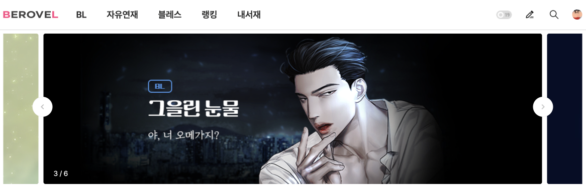
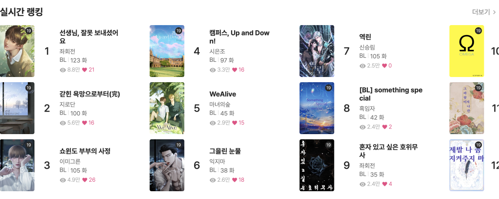
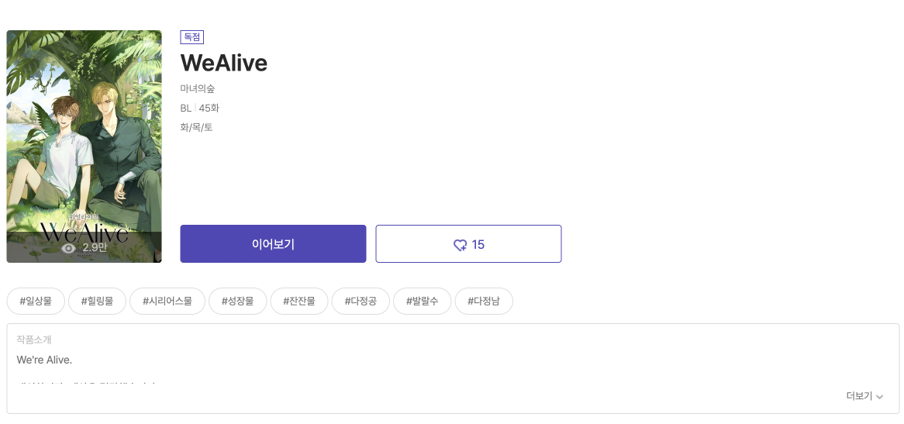
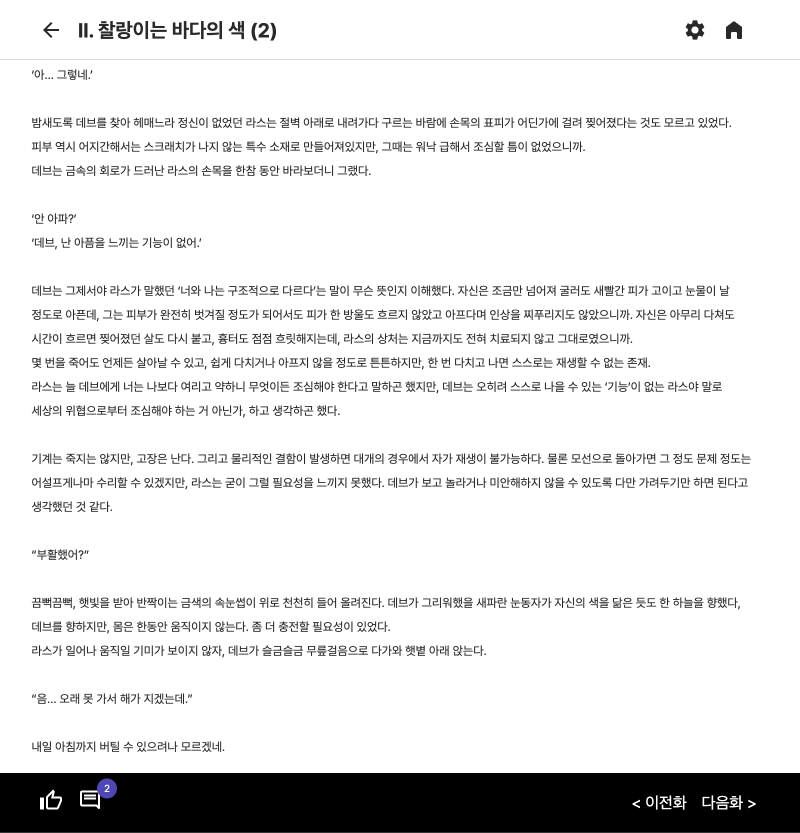

<!DOCTYPE html>
<html lang="en">
  <head>
    <meta charset="UTF-8" />
    <meta http-equiv="X-UA-Compatible" content="IE=edge" />
    <meta name="viewport" content="width=device-width, initial-scale=1.0" />
    <title>suuyom's portfolio</title>
    <link rel="stylesheet" href="./assets/css/style.css" />
    <link rel="stylesheet" href="./assets/css/port.css" />
  </head>
  <body>
    <div class="myPort" id="myPort">
      <button
        class="myPort__ico-close"
        type="button"
        onclick="javascript:window.close()"
      >
        
      </button>
      <div class="myPort__inner">
        <div class="myPort__heading">
          <span class="myPort__name-sub"> RESPONSIVE WEBSITE [PC, MOB]</span>
          <h2 class="myPort__name">비로벨</h2>
        </div>
        <div class="myPort__thum">
          <div class="myPort__thum-img">
            
          </div>
        </div>
        <section class="myPort__summary">
          <div class="myPort__more">
            <a class="myPort__more-link" href="https://www.berovel.com/">
              웹사이트 바로가기
            </a>
          </div>
          <h3 class="myPort__tle">웹소설 플랫폼 사이트 구축</h3>
          <p class="myPort__overView">
            자유연재 웹소설 플랫폼 사이트를 구축 프로젝트입니다.<br />
            vue.js 와 nuxt.js 를 활용하여 작업하였으며 컴포넌트를 분리 및 간단한
            script 작업을 통하여 vue.js에 대한 이해도와 전반적으로 실력을 높일
            수 있었습니다. <br />
            디자인 관점에는 어느 사이즈에서도 깨지지 않도록 반응형을 꼼꼼히 살펴
            작업하였고, 크로스브라우징 체크까지 완료하였습니다.
          </p>

          <div class="myPort-desc">
            <h4 class="myPort-desc__head">&lt; 몽글몽글 작업 &gt;</h4>
            <ul class="myPort-desc__list">
              <li class="myPort-desc__item">
                <span class="myPort-desc__tle">작업기간</span>
                <span class="myPort-desc__text"> 2022.08 ~ 2023.01</span>
              </li>
              <li class="myPort-desc__item">
                <span class="myPort-desc__tle">기술스택</span>
                <span class="myPort-desc__text">
                  HTML5,CSS3,SCSS,JavaScript,vue.js,nuxt.js</span
                >
              </li>
              <li class="myPort-desc__item">
                <span class="myPort-desc__tle">협업툴</span>
                <span class="myPort-desc__text"> git</span>
              </li>
            </ul>
          </div>
        </section>
        <section class="myPort-page">
          <h3 class="myPort__head">Interactive Elements</h3>
          <h4 class="myPort-page__tle">메인 페이지</h4>
          <div class="myPort-page__inner">
            
            <div class="myPort-page__txt">
              <ul class="myPort-page__list">
                <li class="myPort-page__item">
                  <p class="myPort-page__text">
                    <sapn class="myPort-page__skill">swiper.js </sapn> 을 화면에
                    슬라이드 배너를 노출시켰으며, <br />
                    배너이동이 가능하도록 button 커스텀과 <br />
                    indicator를 통해 배너의 개수와 위치를 표시해두었습니다.
                  </p>
                </li>
              </ul>
            </div>
          </div>
          <div class="myPort-page__inner myPort-page__second">
            
            <div class="myPort-page__txt">
              <ul class="myPort-page__list">
                <li class="myPort-page__item">
                  <p class="myPort-page__text">
                    <span class="myPort-page__skill">dragscroll.js </span
                    >사용하여 화면영역을 넘어가는 리스트를
                    <br />드래그스크롤하여 확인 할 수 있도록 작업하였습니다.
                  </p>
                </li>
              </ul>
            </div>
          </div>
          <h4 class="myPort-page__tle">작품소개 페이지</h4>
          <div class="myPort-page__inner">
            
            <div class="myPort-page__txt">
              <ul class="myPort-page__list">
                <li class="myPort-page__item">
                  <p class="myPort-page__text">
                    <sapn class="myPort-page__skill">image popup </sapn>
                    작품 표지를 클릭하면 image popup 뜨도록하여 큰 이미지로
                    확인할 수 있도록 하였습니다. <br />
                    메뉴와 컨텐츠의 인덱스 순서가 동일한 경우 컨텐츠 내용을
                    보여주었고<br />
                    아이템을 선택함과 동시에 캐릭터에 아이템을 장착하는 효과를
                    보여줄 수 있도록 코드 작성하였습니다.
                  </p>
                </li>
                <li class="myPort-page__item">
                  <p class="myPort-page__text">
                    <sapn class="myPort-page__skill">button effect </sapn>
                    button을 클릭하면 '더보기/접기' 기능이 활성화되어
                    작품소개란의 부분을 통해 화면의 사용성을 높였습니다.
                  </p>
                </li>
              </ul>
            </div>
          </div>
          <h4 class="myPort-page__tle">작품읽기 페이지</h4>
          <div class="myPort-page__inner">
            
            <div class="myPort-page__txt">
              <ul class="myPort-page__list">
                <li class="myPort-page__item">
                  <p class="myPort-page__text">
                    <sapn class="myPort-page__skill">swiper.js </sapn> 을 화면에
                    슬라이드 배너를 노출시켰으며, <br />
                    배너이동이 가능하도록 button 커스텀과 <br />
                    indicator를 통해 배너의 개수와 위치를 표시해두었습니다.
                  </p>
                </li>
              </ul>
            </div>
          </div>
        </section>
        <section class="myPort-site">
          <h3 class="myPort__head">site preview</h3>
          <ul class="myPort-site__list">
            <li class="myPort-site__item myPort-site__pc">
              
            </li>
            <li class="myPort-site__item myPort-site__m">
              
            </li>
          </ul>
        </section>
      </div>
    </div>
  </body>
</html>
